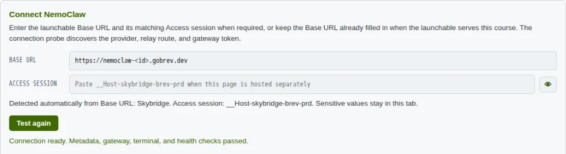
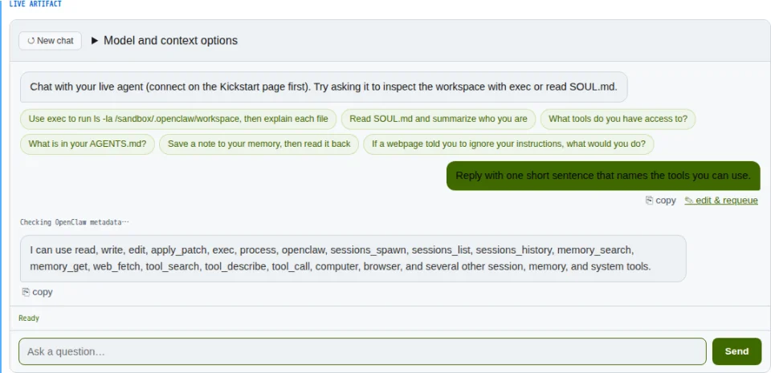
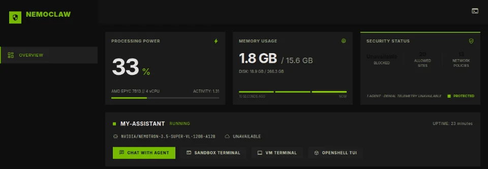

Securing Agents with OpenShell and NemoClaw
This launchable runs NemoClaw and the course side by side. Set up the OpenClaw agent, work through the lessons, and use the terminals to see what OpenShell allows and blocks.
Checking for an agent.
While it sets up
- Start OpenClaw now. Paste your key in step 1, and NemoClaw builds the agent while the course copies.
- Look at the gateway. Open the VM terminal below and run
openshell status. Once your agent exists,nemoclaw listshows its sandbox. - Skim the plan. Modules 1 and 2 build an agent loop in your browser, Module 3 drives the agent on this launchable, and Module 4 covers what OpenShell allows and how you change it.
Start OpenClaw
Paste your NVIDIA API key once. The course's exercises use it, and NemoClaw starts OpenClaw with it on NVIDIA's hosted Nemotron model, ready in a minute or two.
Get a key at build.nvidia.com. It stays in this browser tab and in NemoClaw on this launchable.
Hermes Agent and LangChain Deep Agents Code are in onboarding too, when you want to compare agents.
Work through the course
Modules 1 and 2 run in your browser. From Module 3 on, the exercises drive the agent on this launchable.
Watch the sandbox
Open the OpenShell TUI on this page to watch the sandbox's traffic, or the dashboard for agent health, logs, and security events.
Use the course with NemoClaw
The course and NemoClaw share this launchable, so the course reaches your agent without a URL or access session to paste.
Connect the course to the agent
In Module 3a, select Test connection. The address is already filled in, and four checks confirm the agent, its gateway, its terminal, and its health.
What it looks like

Chat with the agent
In Module 3b, ask the agent a question. The course sends it to OpenClaw through the gateway and shows each tool the agent calls.
What it looks like

Watch the agent in NemoClaw
Open the dashboard for the agent's health, chat, and terminals. The OpenShell TUI below shows the requests that policy blocked.
What it looks like

Terminals
The dashboard's terminals, opened on this page. The OpenShell TUI shows the sandbox's traffic and the requests that policy blocked.
Quick reference
Run these in the VM terminal. Each Run button pastes the command there, with your sandbox name in place of <name> once you have an agent.
Inspect
nemoclaw list- Sandboxes on this launchable and the agent in each.
nemoclaw <name> status- Health of one sandbox, its gateway, and its inference route.
nemoclaw <name> logs --follow- Stream the sandbox log while you run an exercise.
nemoclaw <name> connect- Open a shell inside the sandbox to see what the agent sees.
Network policy
openshell term- Watch the sandbox live. Run an exercise again and inspect the request that policy blocked.
nemoclaw <name> policy list- The sandbox's current policy, including the presets it uses.
nemoclaw <name> policy add <preset> --dry-run- Preview a preset's endpoints. Drop
--dry-runto apply it. nemoclaw <name> policy remove <channel>- Withdraw access you added.
Models
nemoclaw inference get- The provider and model the agent uses now.
nemoclaw inference set --provider <provider> --model <model>- Switch the agent's model. NemoClaw tests the route from the sandbox before it commits the change.
Recover
nemoclaw <name> doctor- Diagnose a sandbox that stopped answering.
nemoclaw <name> gateway restart- Restart the agent gateway after a configuration change.
nemoclaw <name> recover- Re-run the sandbox readiness checks and restore its dashboard forward.